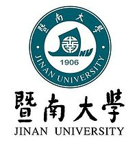

My supervisors are Dr. William Marsh, Prof. Norman Fenton, and Prof. Martin Neil.
My current research topic is using Bayesian network models to improve maintenance decision making from sparse data and expert judgement. I work on:
Queen Mary University of LondonSep 2015 – Present
Ph.D. student in Computer Science (supervised by Dr. William Marsh et al.,): Using Bayesian Networks and Complex Data to Optimize Infrastructure Maintenance in Railways
The University of Hong Kong
Sep 2013 - Dec 2014
M.Sc. in Industrial Engineering and Logistic Management (supervised by Dr. Tak Nam, Wong): Colour Petri Net – based Modelling for Integrated Process Planning and Scheduling
Jinan University
Sep 2009 - Jun 2013
B.Sc. in Electronic Commerce (supervised by Dr. Hua, Bai): Tourism Supply Chain Collaborative Demand Forecasting Model based on Colour Petri Nets

Email: haoyuan.zhang@qmul.ac.uk
Office: CS437, Computer Science Building, Queen Mary University of London, Mile End Road, London E1 4NS